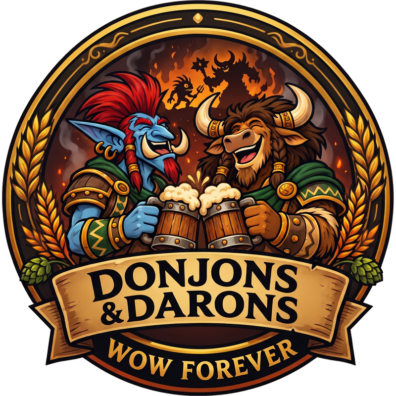

Des joueurs adultes
Boulot, famille, vie à côté : on joue sérieusement sans que le jeu passe avant le reste. Personne ne vous reprochera d'aller coucher les enfants.

Guilde Horde · WoW Forever
Fun, mature et sympa. On tombe les boss, on rigole en vocal, et on ne se prend pas la tête.
Boulot, famille, vie à côté : on joue sérieusement sans que le jeu passe avant le reste. Personne ne vous reprochera d'aller coucher les enfants.
On vise le contenu de raid de Forever avec une ambiance détendue. Loot en soft-res, règles claires, et des officiers qui tranchent vite et avec le sourire.
Du niveau 1 au niveau 60 : entraide au leveling, donjons en groupe, artisanat partagé. Les rerolls sont les bienvenus.
Le recrutement est ouvert à tous les joueurs majeurs, quel que soit leur niveau. Pour le roster de raid, voici nos besoins actuels.
| Classe | Besoin |
|---|---|
| Guerrier | Ouvert |
| Druide | Ouvert |
| Prêtre | Ouvert |
| Chaman | Ouvert |
| Mage | Ouvert |
| Démoniste | Ouvert |
| Chasseur | Ouvert |
| Voleur | Ouvert |
Rejoignez notre Discord.
Présentez-vous dans #candidatures : personnage, classe, métiers et disponibilités.
Un officier vous invite en jeu. Vous passez deux semaines en tant que Recrue, puis vous devenez Membre.
À définir : jours et horaires de raid.
Inscriptions via Raid-Helper sur le Discord, au plus tard 2 h avant le pull.
Cœur du Magma et Onyxia pour commencer, puis le Repaire de l'Aile noire.
Stratégies et logs partagés sur le Discord.
Soft-res via softres.it : une réservation par joueur et par raid. Ce qui n'est pas réservé est attribué au /roll.
Simple et transparent : pas de points à tenir, pas de drama.